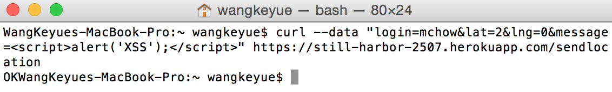
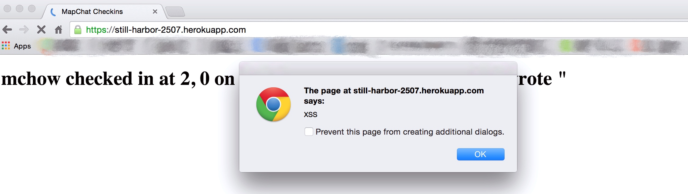
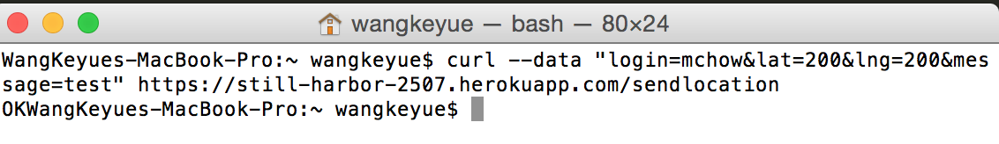
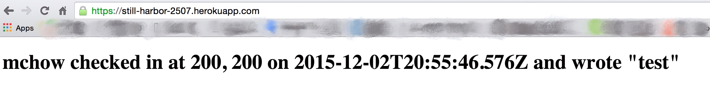
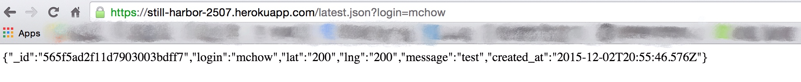
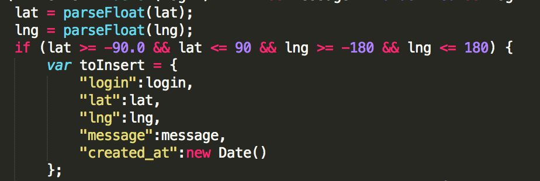
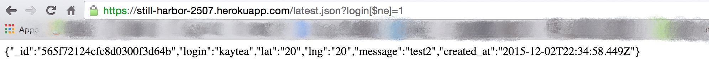
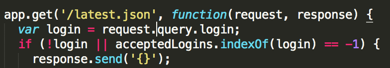
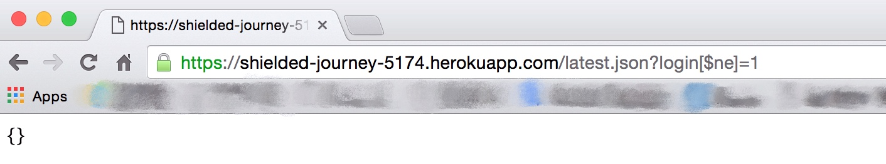

by Keyue Wang
12/4/2015
My goal in this assignment is to find as many security and privacy problems as I can from the web application developed by Francesca Caiazzo for Comp20 assignment 2 and 3. This product is a map application that you can see where are you in the map and know the distances between you and other logins and get the messsages from them. You can also get the latest login information of one of the approved logins. In the homepage, you can get a list of the check-ins and messages for all logins sorted in descending order by timestamp.
First, perform attacks WITHOUT reading the source code. This is also known as "black box" testing. I used curl --data to send some invalid data to the /sendLocation and it did "work".
Then I read the source code and found other vulnerabilities and used curl --data to crash the application again.
In this project, the securitpy issues that can be easily generated are basically from the unexpected external data, hackers can send this kind of data just using curl --data, which is definitely simple to achieve. These malicious actions can change the contents of the website or insert some invalid/malicious information to the application.
Cross-Site Scripting (also known as XSS) is one of the most common application-layer web attacks. Malicious users can manipulate client-side scripts of a web application to execute in the manner desired by them. Such a manipulation can embed a script in a page that can be executed every time the page is loaded. In this project, they easiest way to use the XSS vulnerability is embeding a script in the "message" because there is no restriction on the content of the "message". Normally, people would send a "real" message to the server("hello world" for example) . However, the bad guy can use this leak to embed a script as a message. Here is what I did(not malicious at all, but did do something unexpected.)
When we refresh the website, we can see the change, and it will executed every time when the page is loaded. Definitely annoying!
To avoid having Cross-site Scripting (XSS) vulnerabilites like this case, developers can use the technology by sanitizing userinputted data in an HTTP request before reflecting it back. Convert special characters
such as ?, &, /, < >, and spaces to their respective HTML or URL encoded equivalents
After reading the source code, I found that there is no digital range limit about the lat and lng , which means as long as the input lat and lng are numeric values, the data can be sent successfully. ( Because there is a validate about the content of lat and lng :
if (validLogins.indexOf(checkin.login) != (-1) && (checkin.lat) && (!isNaN(checkin.lat)) && (checkin.lng) && (!isNaN(checkin.lng)) && (!!checkin.message))
click this link to see more about isNaN
When I input a non-existent latitude and longtitude to the database, it successed.
When we refresh the website, we can see this record.
Also, when we want to know the latest login=mchow, we can get this.
It's very easy to fix this leak, just add this code: ( as Ming does -- to make sure the login is on the earth.)
This technical issue -- using [$ne] to return the latest login information can realize the hacker's dream that get users' information without knowing their names. After loading this page, they will know the latest user's information.
The code below is what I do to resolve this issue.
 With the increasingly development of web application, more and more information sharing through social networking and increasing business adoption of the Web as a means of doing business and delivering service, websites are often attacked directly. Although in the assignment 2 and 3, the security issue result from the vulnerabilities of the web application are not severe as other websites like online banks, we need to focus on the potential security risks of any web application. However, many vulnerabilities are easy to find and resolve, just keep the web security on mind.
Security 101: never trust user input from a client.